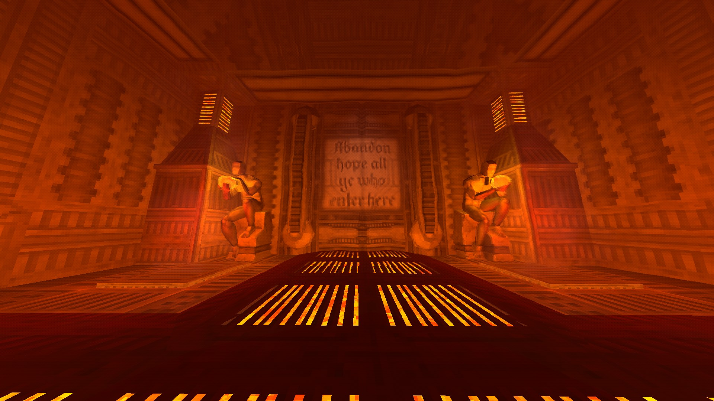
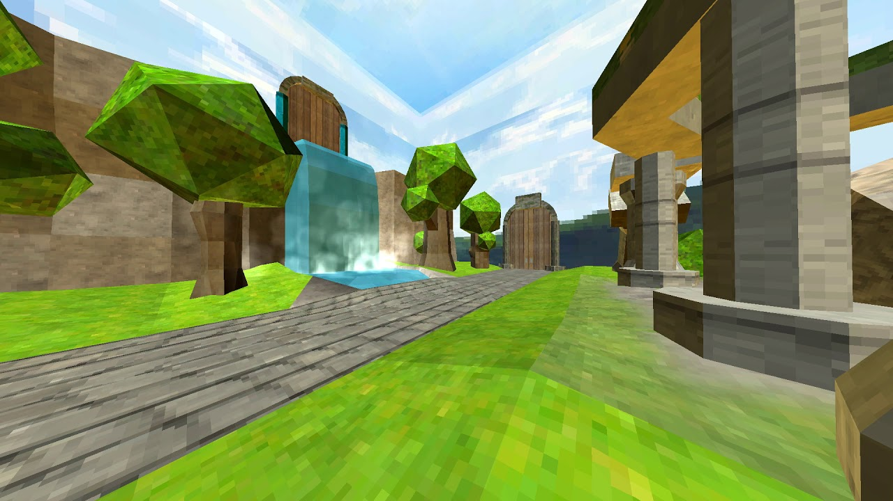
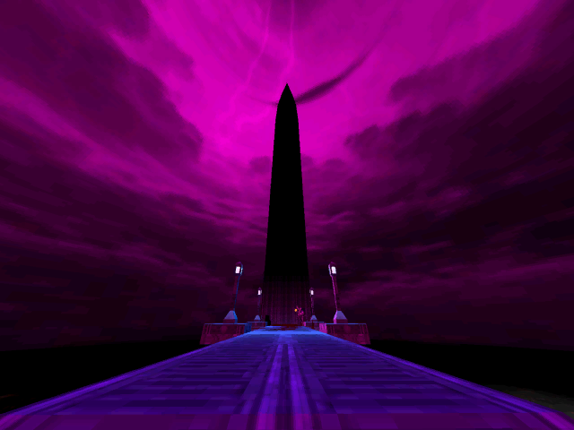
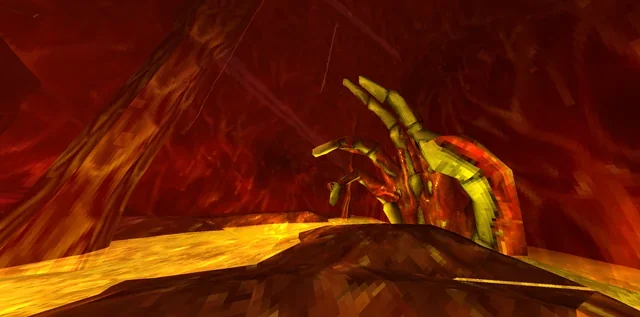
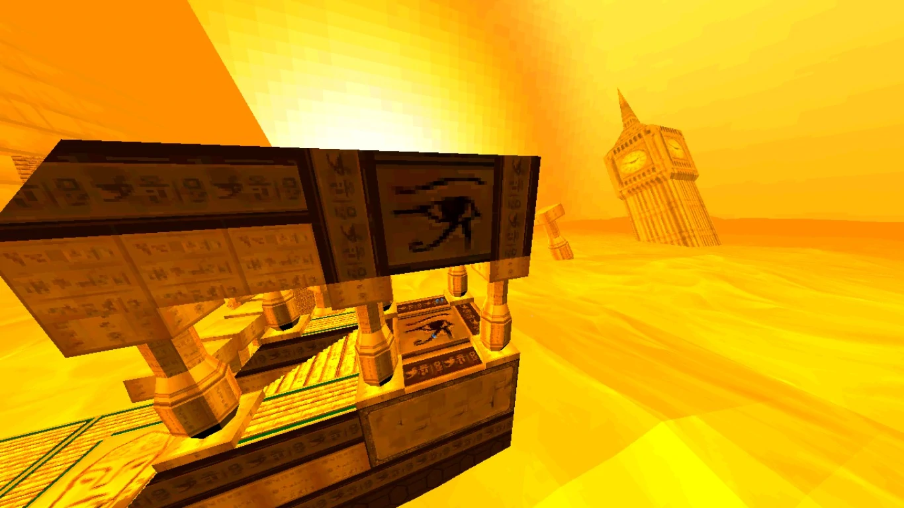
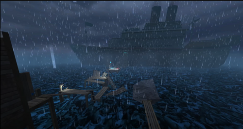
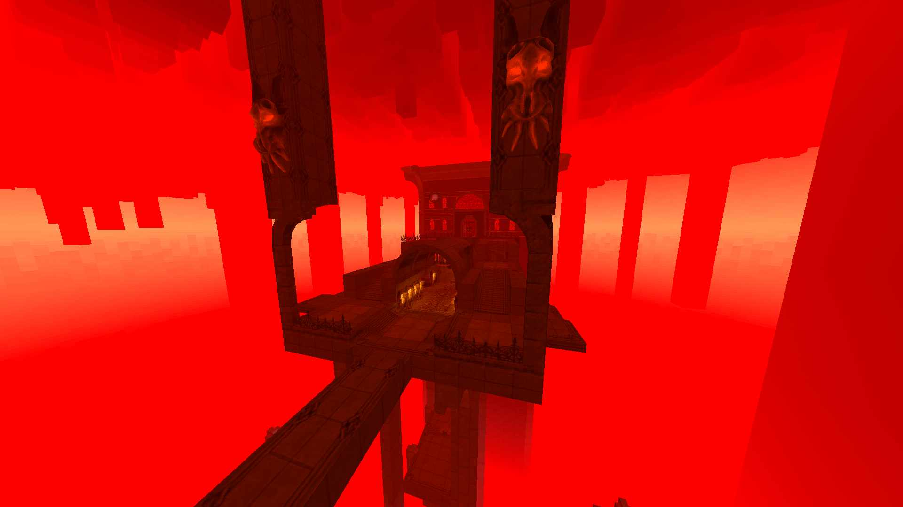
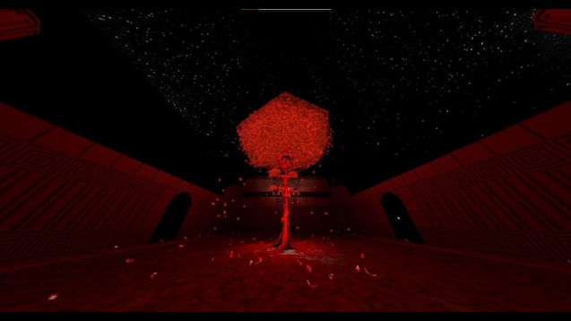

Introduction to the game
In this game, you play as semi sentient, blood fuled robot named V1 that is currently making its way through
the various layers of Hell in search of blood as fuel, anhihilating anything and everything in its path, not
out of malice but rather out of a desire for survival. Each layer, with its construction, colours and themes
can be directly traced back to Dante's Inferno, a book that can very much be considered a self insert
fanfiction about God and their work.
Eacher layer is divided in 4 or 2 levels, save for the prelude which has 5, depending on what one you are on
with the 2 level layers being the ones in which you fight the main "antagonist": the Archangel Gabriel.
As this game takes place in hell, it must come to no suprise that the ennemies you fight are hell themed.
However there is a little more to them than that as you have 5 enenmy types: Husks, Machines, Demons, Angels
and Prime Souls.
Husks are the most basic ennemy types and come from the souls of sinners, with their size and power
depending on how influencial of a person they were while they lived, such examples being Minos who was
really important while alive and thus has a massive body, most however are simple fodder with no ability to
think and simply attack you on sight. Within the husks, in order of power, you have the filth, strays,
stalkers, schisms, soldiers, insurrectionists, ferrymen and The Corpse of King Minos.
The machines are leftovers from humanities Hell expeditions. They scoure the layers in search of blood to
fuel themselves and keep going, driven by a form of suvival instinct. Just like husks, they come in various
power levels, starting with the drones, streetcleaners, sentries, swordsmachines, mindflayer, guttermen,
guttertanks, 1000-THR "Earthmover", V2 and V1.
The demons are hell spawn, they are formed of the mass of souls in coaless into stony bodies that guard
Hell. The order of them goes: malicious faces, mannequins, idols, cerberi, hideous masses, the minotaur and
The Leviathan.
You then have angels, angelic (obviously) beings that were went down into Hell to guard the place and make
sure the sinners fullfilled their duties. At the time of writing, we have only encountered 2 angels, the
virtues that are lesser angels, being the manifestation of benevolent souls, and the Archangel Gabriel who
is the main warden of Hell and the one who carries "The Father's Light".
Explaining the layers and their construction
Prelude: In this layer, you go through what appears to be abandoned human contructions, with it all
culminating into a door stating "abandon hope, all ye who enter here", which is a nod towards the
inscriptions on the gate to hell in Dante's Inferno. The reason the place is baren is mostly unkown with the
best guess being that humanity must have simply left it behind at some point and if they are still around
currently is unkown.

Layer 1, Limbo: This layer is filled with those who didn't sin but they were however not deemed worthy of
entering Heaven upon their death. It is built as a sophisticated torture machine with every aspect of it
taunting you by showing what could have been for you, should you have believed in god. This is accomplished
through fake scenery, bird noises and so on.

Layer 2, Lust: This layer is suprisingly industrialised due to the work of its former ruler: King Minos,
with a full fledged city being found within. This was accomplished through a lack of intervention from the
angels, after God's disapearance from this universe for reasons. During the angel's abscence, King Minos
decided to bring his citizens a good life, believed that eternal punishement for simply loving one another
was too harsh. His kingdom however fell after Gabriel struck him down when the angels came back.

Layer 3, Gluttony: This layer is set to be a fleshy amalgam of bones and various body parts, hapazardly
strewn around. In it, you fight Gabriel for the first time. Gabriel is made to face you as he has been
instructed by The Council, a group of angels that currently oversee Heaven and Hell. During the fight, he is
extremely cocky, having never lost a fight, he has full confidence in his abilty to defeat you.
Unfortunately for him, you prove him wrong which sends him into a fury after which he disapears, going back
to Hevaen to report on the situation, The Council however views his defeat as him not being worthy of "The
Light", and strip it from him, telling him that he will die in the next 24 hours if us the player, have not
been stopped.

Layer 4, Greed: This layer is set in the desert, with the punishement for sinning being to carry boulders up
pyramids, exactly like in "The Myth of Sisiphus", by Albert Camus. Suprisingly enough, the ennemies found in
this layer do embody the sense of futility in fighting, viewing the act itself as fullfilling. This is shown
best through Sisiphus, a military leader that wanted to overthrow Heaven during their abscence. He knew from
the start however, that this was a fruitless endeavor but that didn't stop him, as the view the action of
defile itself as the objective, not that of winning. The conclusion to that story is his armies being
defeated by the forces of Heaven and his head being decapitation by Gabriel.

Layer 5, Wrath: This layer is mostly water based, with the levels being set within The Sea of Souls, a
boundless ocean of sinners left to endlessely fight the impossible current to stay on the surface. This huge
ocean came about during and after humanities Great War with billions upon billions of souls filling it and
rendering the once peaceful layer into a never ending storm.

Layer 6, Herey: This layer is the most hell themed of them all, with most of the visual elements being what
you imagine when you think of torture in hell. In it, you fight Gabriel a second time, in which his title
changed from "Judge of Hell" to "Apostate of Hate". During the fight, he is much more agressive, having
abandoned all taunts in favor of an unrelenting assault. After you defeat him however, he takes some time to
reconsider his place within the world and comes to the conluction that "The Father" truly is gone, with The
Council pupetearing his will to accomplish their own goals. This results in him singlehandedly dismanteling
the council through brutal executions, much to the enjoyement of the citizens of Heaven.

Layer 7, Violence: This layer is the one that represents violence against oneself, humanity and God. In it,
you find the remenants of The Great War and finally get more information about it. It is said that the Great
War is this universes equivalent to WWI but where for us it ended, for them it never did, leading to a
senseless, never ending arms race that resulted in the creation of machines fuled by blood, first by that of
war prisonners, strapped to the back of machines such as the Gutterman. The machines however soon no longer
needed such limitations and thus the war continued ever forward with no end in sight. The pinnacle of the
war came with The Earthmovers, machines large enough to not only carry their own shiled generator but also
carry entire cities on their back as by this point, the earth was nothing but an endless scorched plain. The
war ended some point after that, not with a bang but with a wimper. Having completely decimated their world,
humanity soon started to rebuild, exploring Hell as a way to gather near limitless energy. During this "New
Peace", humanity transformed its war machines into machines useful for everyday life, such is the case for
the streetcleaners who served as a way to clean up the atmosphere. One machine was also built as a
prototype, V2, the succesor to V1, the asbolute pinnacle of human engeneering and the ultimate weapon, a
machine made to give the Earthmovers a lobotomy but due to its complexity, was never put into full
production, also seeing how the war ended before it was ever able to be used.

Layer 8, Fraud: ???
Layer 9, Treachery: ???
Story Conclusion
Overall, this game posses a very intricate and interesting story that takes its roots in many of media's
most well known places. I skipped over a LOT of details when writting this and thus it does lack a lot of
the nuances and thoughts the game throws at you but it is a pretty good overview of things.
I would rate the story in this game as a solid 9.5/10